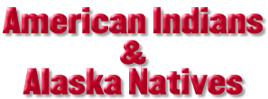

PRESS RELEASE
July 26, 1996AMERICAN INDIANS AND ALASKA NATIVE LEADERS FORM NATIONAL CLINTON/GORE �96 STEERING COMMITTEE WASHINGTON -- Seventy American Indian and Alaska Native leaders from 21 states joined Peter S. Knight, Clinton/Gore �96 Campaign Manager, and Alan Wheat, Clinton/Gore �96 Deputy Campaign Manager and Director of Public Liaison, via a nationwide teleconference call to announce the formation of an honorary national steering committee, "American Indian and Alaska Native Leaders for Clinton/Gore �96."
With only 26 days left until election day, "American Indian and Alaska Native leaders for Clinton/Gore �96" pledged their support for President Clinton and Vice President Gore. They will focus on informing the American Indian and Alaska Native community of the Administration�s strong record in Indian country; promoting Get-Out-The-Vote efforts among Native Americans; and maximizing Native American support for the reelection of the President and the Vice President.
Serving as National Co-Chairs of �American Indian and Alaska Native Leaders for Clinton/Gore �96" are Cecil Antone, who is Chairman of the Inter Tribal Council of Arizona; Gregg Bourland, who is Chairman of the Cheyenne River Sioux Tribe of South Dakota; and Rhonda Swaney, who is Chairwoman of the Confederated Salish and Kootenai Tribal Council in Montana.
"The President is proud of the support he has received from the American Indian and Alaska Native community. I look forward to their continued participation in these crucial last weeks before the election," said Peter S. Knight.
Alan Wheat thanked the leaders for their support and joined them in issuing a "Call to Action" for all Native people to vote. "The enthusiastic support among American Indians and Alaska Natives for the Clinton Administration�s policies and record in Indian country is an indication of the fundamental differences between the President�s record and the record of the Dole/Gingrich Congress on such basic matters as responsible levels of funding for Indian programs, involvement of Indian tribes in policy issues which affect them, and respect for tribal sovereignty," said Wheat.
The Committee includes tribal leaders, chairmen of intertribal organizations, a Native candidate running for the U.S. House of Representatives, Native Americans for Clinton/Gore �92 supporters, and heads of Alaska Native Corporations, Native organizations and Urban Indian organizations.
Attached is a list of accomplishments on American Indian and Alaska Native issues and a list of committee members of "American Indian and Alaska Native Leaders for Clinton/Gore �96."
### American Indian and Alaska Native Leaders for Clinton/Gore �96
National Honorary Co-Chairs
Cecil Antone, President, Inter Tribal Council of Arizona
Gregg Bourland, Chairman, Cheyenne River Sioux Tribe of South Dakota
Rhonda Swaney, Chairwoman, Confederated Salish & Kootenai Tribal Council of MontanaState Honorary Chairs
Alaska
Willie Hensley, Member, Native Americans for Clinton/Gore �92
Gordon Jackson, CEO, Kake Tribal Corporation
Myron Naneng, President, Association of Village Council PresidentsArizona
Cecil Antone, President, Intertribal Council of Arizona
Daniel Eddy, Jr., Chairman, Colorado River Tribal Council
Albert Hale, President, Navajo Nation
Ronnie Lupe, Chairman, White Mountain Apache
Ivan Makil, President, Salt River Pima-Maricopa Indian Community
Edward Manuel, Chairman, Tohono O�odham Council
Raymond Stanley, Chairman, San Carlos Tribal Council
Mary Thomas, Governor, Gila River Indian CommunityCalifornia
Mary Ann Andreas, Chairperson, Morongo Band
Dale Risling, Chairman, Hoopa Valley Tribal CouncilConnecticut
Richard �Skip� Hayward, Chairman, Mashantucket Pequot TribeColorado
John Echohawk, Member, Native Americans for Clinton/Gore �92
Lucille A. Echohawk, Member, Native People�s Political Alliance
Yvette Joseph-Fox , Exec. Director, National Indian Health Board (Colville)
Linda Yardley, Member, Native Americans For Clinton/Gore �92Idaho
Delbert Farmer, Chairman, Fort Hall Business Council
Ernest Stensgar, Chairman, Coeur D�Alene Tribal CouncilIllinois
Gwen Carr, Chairwoman, National Urban Indian Policy CoalitionMichigan
Bernard Bouschor, Chairman, Sault Ste. Marie Chippewa Tribal CouncilMinnesota
Marge Anderson, Chairperson, Mille Lacs Band Assembly
Stanley Crooks, Chairman, Shakopee Mdewakenton Sioux Community
Bobby Whitefeather, Chairman, Red Lake Band of Chippewa IndiansMontana
Llevando Fisher, President, Northern Cheyenne Tribal Council
Tracy King, President, Gros Ventre & Assiniboine Tribe
Clara Nomee, Madam Chairman, Crow Tribal Council
Earl Old Person, Chairman, Blackfeet Tribal Business Council
Caleb Shields, Chairman, Assiniboine & Sioux Tribes
John Sunchild, Chairman, Chippewa-Cree Business Committee
Rhonda Swaney, Chairwoman, Confed. Salish & Kootenai Tribal Council
Bill Yellowtail, Dem. Nominee, U.S. Congress Montanta At-Large (Crow)Nebraska
John Blackhawk, Chairman, Winnebago Tribal Council
Frank LaMere, Exec. Director, Nebraska Intertribal Council (Winnebago)Nevada
Arlan Melendez, Chairman, Reno-Sparks Tribal Council
Alfreda Mitre, Chairperson, Las Vegas Tribal Council
A. Brian Wallace, Chairman, Washoe TribeNew Mexico
Thomas Atcitty, Vice President, Navajo Nation
Leonard Garcia, Governor, Pueblo of Santa Ana
Kevin Gover, Member, Native Americans for Clinton/Gore �92
Jacob Viarrial, Governor, Pueblo of Pajoaque
Frederick Vigil, Governor, Pueblo of TesuqueNorth Dakota
Les LaFountain, Senator, North Dakota State Senate (Turtle Mountain Band of Chippewa)
Russell �Bud�Mason, Senior Chairman, Three Affiliated TribesOklahoma
Bill Anoatubby, Governor, Chickasaw Nation
Perry Beaver, Principal Chief, Muscogee (Creek) Nation
Joe Byrd, Principal Chief, Cherokee Nation of Oklahoma
Wallace Coffey, Chairman, Comanche Indian Tribe
Enoch Kelly Haney, Senator, Oklahoma State Legislature (Seminole)
Charles Surveyor, Chairman, Cheyenne-Arapaho Tribe of OklahomaOregon
Anton Minthorne, Chairman, Confederated Tribes of Umatilla
Sue Shaffer, Chairwoman, Cow Creek Band of Umpqua IndiansSouth Carolina
Gilbert Blue, Chief, Catawba Indian NationSouth Dakota
Gregg Bourland, Chairman, Cheyenne River Sioux Tribal Council
John Yellowbird Steele, President, Oglala Lakota NationUtah
Larry Echohawk, Member, Native Americans for Clinton/Gore �92Washington
Joe Bowen, Candidate, Dem. Primary in the 2nd District (Upper Skagit)
Henry M. Cagey, Chairman, Lummi Nation
Pearl Capoeman-Baller, President, Quinalt Indian Nation Business Cmte.
Joe DeLaCruz, Member, Native Americans for Clinton/Gore �92
Billy Frank, Chairman, Northwest Indian Fisheries Commission
Lyle Emerson George, Chairman, The Suquamish Tribe
Ross Sockzehigh, Chairman, Yakima Tribal Council
Bernie White Bear, CEO, Day Break Star Center
Bruce Wynne, Chairman, Affiliated Tribes of Northwest IndiansWisconsin
Deborah Doxtator, Chairperson, Oneida Tribe of Wisconsin
Tom Maulson, President, Lac du Flambeau Tribal Council
Virgil Murphy, President, Stockbridge Munsee Community
John Teller, Chairman, Menominee Indian Tribe of WisconsinThe above are individual endorsements and do not represent the endorsemnt of any affiliated organization.
###